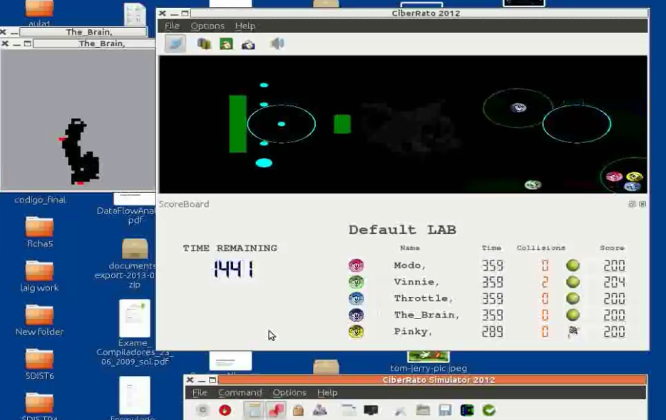

Contact
| 📧 Email: | omar.castro.360@gmail.com |
| 🏠 Homepage: | https://omarcastro.website |
Social networks
| ⌨️ Github: | https://github.com/OmarCastro/ |
| 📜 Linkedin: | http://www.linkedin.com/pub/omar-castro/6a/221/aab/ |
Want to save into your phone contacts?
You can do it scanning this QR code
You can do it scanning this QR code
Skills
This section presents an overview of my skills
- HTML
- CSS
- Javascript
- Java
- Angular
- React
- Vue
- Scala
- Kotlin
- docker
- Ansible
- Kubernetes
Works

Paragon
A responsive web application developed jointly with Altran Portugal. It consists of a platform for the creation, discussion and maturation of business ideas.Cat and Mouse
A robotic game project based on the CiberRato Robot Simulation Environment, in which simulates the movement of robots inside a labyrinth. There are 2 types of robots, the cats and the mice, the cats objective is to catch the mouse and the mouse is to avoid getting caught in the labyrinth. The game can also be played unsing a device with gyroscpe and internet as a controller.

AR Fruit Samurai
A game based on augmented reality where you cut virtual fruits with that come from a basket, a virtual sword, which in reality is made of paper, unfortunately, to enjoy the game you had to have a high frame-rate camera, because you may pass a fruit without cutting it due to sheer swing speed and a low framerate camera, I played with a smartphone camera, so I know how it feels.Third person asteroid
An challenging variant of an asteroid game. It is challenging because the world rotates around the ship instead the ship rotating in the world. The rules to win are simple, destroy the surrounding asteroids while surviving against invading enemy alien ships with better accurancy than a sniper. You can play the game here.
Omar Alejandro Castillo de Castro, born in Santo Domingo, Dominican Repubic, is an engineer graduated from
the Faculty of Engineering of University of Porto (FEUP) in the master's degree of Informatics and Computing.
A creative, hard-working, adaptable, caring and responsible person. He likes traveling (not alone) and have a fit body.
He has interest in software management, FullStack Web engineering, robotics, UX.
Omar Castro
Swipe to change page